Code
library(tidyverse)
library(dplyr)
library(ggplot2)
library(readxl)
library(plotly)In this assignment, we are going to practice creating visualizations for tabular data. Unlike previous assignments, however, this time we will all be using the same data sets. I’m doing this because I want everyone to engage in the same logic process and have the same design objectives in mind.
Imagine you are a high priced data science consultant. One of your good friends, Cassandra Canuck, is an Assistant General Manager for the Vancouver Canucks, a team in the National Hockey League with a long, long…. long history of futility.
Cassandra tells you her boss, General Manager Hans Doofenschmirtz, is considering trading this year’s first round draft pick for two second round picks and one third round pick from another team. For the purposes of this exercise, let’s set the 2023 NHL draft order using the Tankathon Simulator. The NHL uses a lottery system in which the teams lowest in the standings have the highest odds of getting the first overall pick. I’ll simulate the lottery now…
HOLY CRAP! The Vancouver Canucks jump up 6 spots, and will pick FIRST overall. Here is a screenshot:

Our official scenario is this:
Vancouver receives: The 7th pick in the second round (39th overall), the 10th pick in the second round (42nd overall), and the 10th pick in the third round (74th overall).
Detroit receives: The 1st pick in the first round (1st overall).
Doofenschmirtz reasons that more draft picks are better, and is inclined to make the trade. Cassandra isn’t so sure…
She asks you to create some data visualizations she can show to her boss that might help him make the best decision.
Create a new post in your portfolio for this assignment. Call it something cool, like NHL draft analysis, or Hockey Analytics, or John Wick….
Copy the data files from the repository, and maybe also the .qmd file.
Use the .qmd file as the backbone of your assignment, changing the code and the markdown text as you go.
How can we evaluate whether trading a first round pick for two second round picks and a third round pick is a good idea? One approach is to look at the historical performance of players from these draft rounds.
I’ve created a data set that will allow us to explore player performance as a function of draft position. If you are curious as to how I obtained and re-arranged these data, you can check out that tutorial here. For this assignment, though, I want to focus on the visualizations.
library(tidyverse)
library(dplyr)
library(ggplot2)
library(readxl)
library(plotly)NHLDraft<-read.csv("NHLDraft.csv")
NHLDictionary<-read_excel("NHLDictionary.xlsx")
glimpse(NHLDraft)Rows: 105,936
Columns: 12
$ X <int> 1, 2, 3, 4, 5, 6, 7, 8, 9, 10, 11, 12, 13, 14, 15, 16, 17,…
$ draftyear <int> 2001, 2001, 2001, 2001, 2001, 2001, 2001, 2001, 2001, 2001…
$ name <chr> "Drew Fata", "Drew Fata", "Drew Fata", "Drew Fata", "Drew …
$ round <int> 3, 3, 3, 3, 3, 3, 3, 3, 3, 3, 3, 3, 3, 3, 3, 3, 3, 3, 3, 3…
$ overall <int> 86, 86, 86, 86, 86, 86, 86, 86, 86, 86, 86, 86, 86, 86, 86…
$ pickinRound <int> 23, 23, 23, 23, 23, 23, 23, 23, 23, 23, 23, 23, 23, 23, 23…
$ height <int> 73, 73, 73, 73, 73, 73, 73, 73, 73, 73, 73, 73, 73, 73, 73…
$ weight <int> 209, 209, 209, 209, 209, 209, 209, 209, 209, 209, 209, 209…
$ position <chr> "Defense", "Defense", "Defense", "Defense", "Defense", "De…
$ playerId <int> 8469535, 8469535, 8469535, 8469535, 8469535, 8469535, 8469…
$ postdraft <int> 0, 1, 2, 4, 5, 10, 11, 12, 13, 3, 6, 7, 8, 9, 14, 15, 16, …
$ NHLgames <int> 0, 0, 0, 0, 3, 0, 0, 0, 0, 0, 5, 0, 0, 0, 0, 0, 0, 0, 0, 0…knitr::kable(NHLDictionary)| Attribute | Type | Description |
|---|---|---|
| draftyear | Ordinal | Calendar year in which the player was drafted into the NHL. |
| name | Item | Full name of the player. |
| round | Ordinal | Round in which the player was drafted (1 to 7). |
| overall | Ordinal | Overall draft position of the player (1 to 224) |
| pickinRound | Ordinal | Position in which the player was drafted in their round (1 to 32). |
| height | Quantitative | Player height in inches. |
| weight | Quantitative | Player weight in pounds. |
| position | Categorical | Player position (Forward, Defense, Goaltender) |
| playerId | Item | Unique ID (key) assigned to each player. |
| postdraft | Ordinal | Number of seasons since being drafted (0 to 20). |
| NHLgames | Quantitative | Number of games played in the NHL in that particular season (regular season is 82 games, playoffs are up to 28 more). |
In this case, we have a dataframe with all the drafted players since 2000, their position, their draft year and position, and then rows for each season since being drafted (postdraft). The key variable here is NHLgames, which tells us how many games they played in the NHL each season since being drafted.
One thing to realize about professional hockey is that it is pretty rare for a player to play in the NHL right after being drafted. Players get drafted when they are 18 years old, and they usually play in the juniors, minor leagues, or the NCAA for a bit to further develop. Let’s use a scatterplot to visualize this phenomenon with the most recent draft classes.
draft2022<-NHLDraft%>%
filter(draftyear==2022 & postdraft==0)
ggplot(draft2022, aes(x=round, y=NHLgames))+
geom_point()
As you can see, the players drafted in June of 2022 haven’t played much this season. There are few things wrong with this visualization, however:
ggplot(draft2022, aes(x=as.factor(round), fill = factor(NHLgames))) +
geom_bar(position = "stack", stat = "count")+
geom_text(aes(label = paste0("n=", after_stat(count))), stat='count', position = position_stack(vjust = 0.5)) +
theme_classic()+
labs(title = "Fig 1. The # of games after a player been drafted",
subtitle = "Channel: Length, Mark: Bars",
caption = "The draft year of 2022")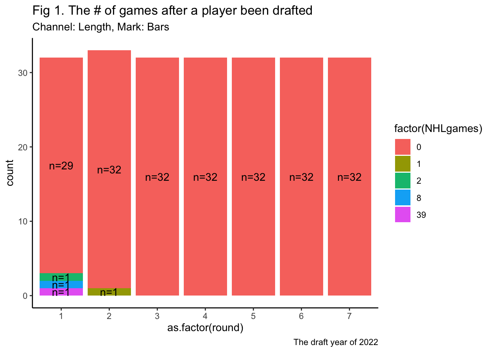
Solution: changing the position of geom_bar from fill to stack.
The data from the most recent draft isn’t really helpful for our question. Let’s go back in time and use a draft year that has had some time to develop and reach their potential. How about 2018?
draft2018<-NHLDraft%>%
filter(draftyear==2018 & postdraft<6)
ggplot(draft2018, aes(x=round, y=NHLgames))+
geom_point()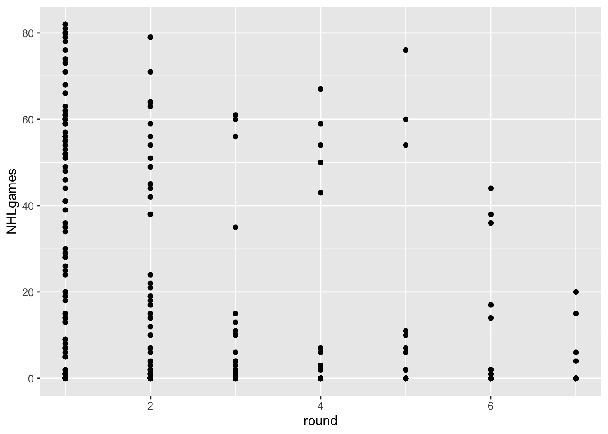
Hmmm… in addition to the problem of overplotting, we’ve got an additional issue here. We actually have two keys and one attribute. The attribute is NHLgames, and the keys are round and postdraft, but we are only using round.
Postdraft indicates the number of seasons after being drafted. We have several choices here. We can make a visualization that uses both keys, or we can somehow summarize the data for one of the keys.
For example, let’s say we just wanted to know the TOTAL number of NHL games played since being drafted.
drafttot2018<- draft2018%>%
group_by(playerId, round, overall, position, name)%>%
summarise(totgames=sum(NHLgames))`summarise()` has grouped output by 'playerId', 'round', 'overall', 'position'.
You can override using the `.groups` argument.ggplot(drafttot2018, aes(x=round, y=totgames))+
geom_point()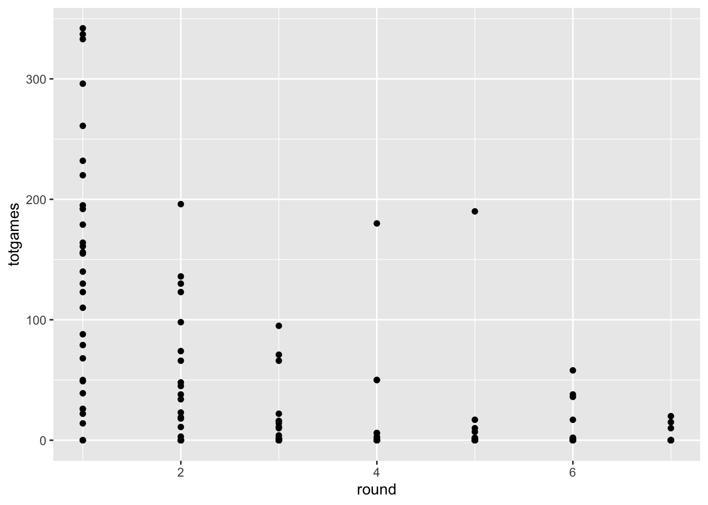
Fine, I guess, but we still have to deal with overplotting, and think about whether a scatterplot really helps us accomplish our task. For this figure do the following:
drafttot2018 <- transform(
drafttot2018, has_game = ifelse(totgames>0, TRUE, FALSE)
)
ggplot(drafttot2018, aes(x=as.factor(round), fill = factor(has_game))) +
geom_bar(stat = "count",
#position = drafttot2018$NHLgames
position = "stack"
)+
geom_text(aes(label = paste0(factor(has_game))), stat='count', position = position_stack(vjust = 0.5)) +
labs(title = "Fig 2.2 Games after a player been drafted for 6 seasons",
subtitle = "Channel: Length, Mark: Bars",
caption = "The draft year of 2018")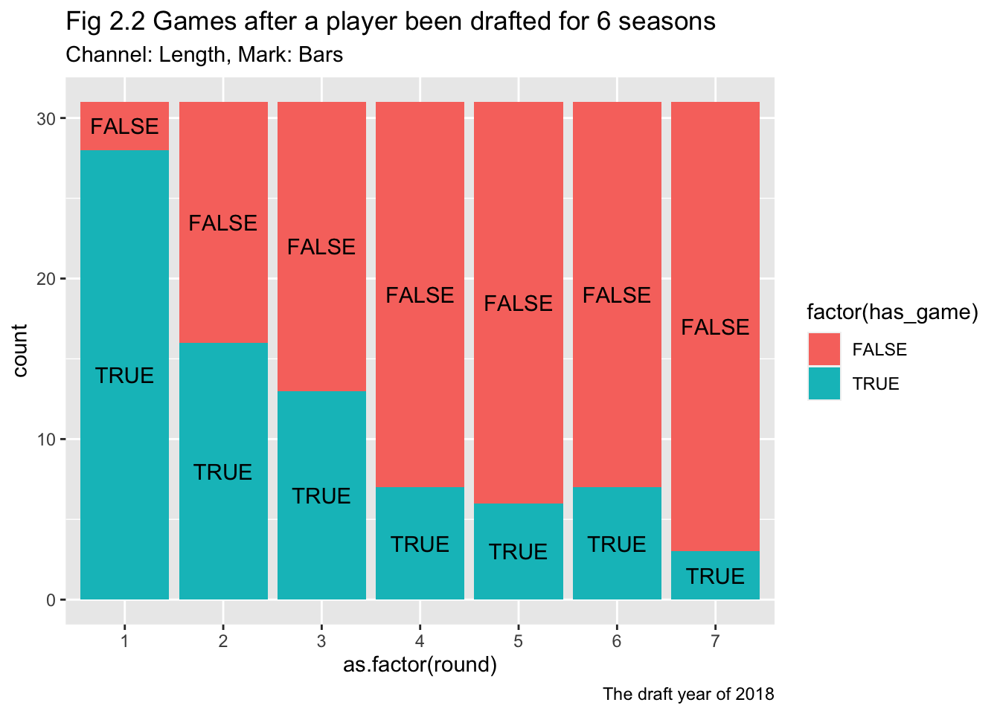
ggplot(drafttot2018, aes(x=as.factor(round), fill = factor(totgames))) +
geom_bar(stat = "count",
#position = drafttot2018$NHLgames
position = "fill"
)+
geom_text(aes(label = paste0(totgames)), stat='count', position = position_fill(vjust = 0.5)) +
labs(title = "Fig 2.1 Games after a player been drafted for 6 seasons",
subtitle = "Channel: Length, Mark: Bars",
caption = "The draft year of 2018")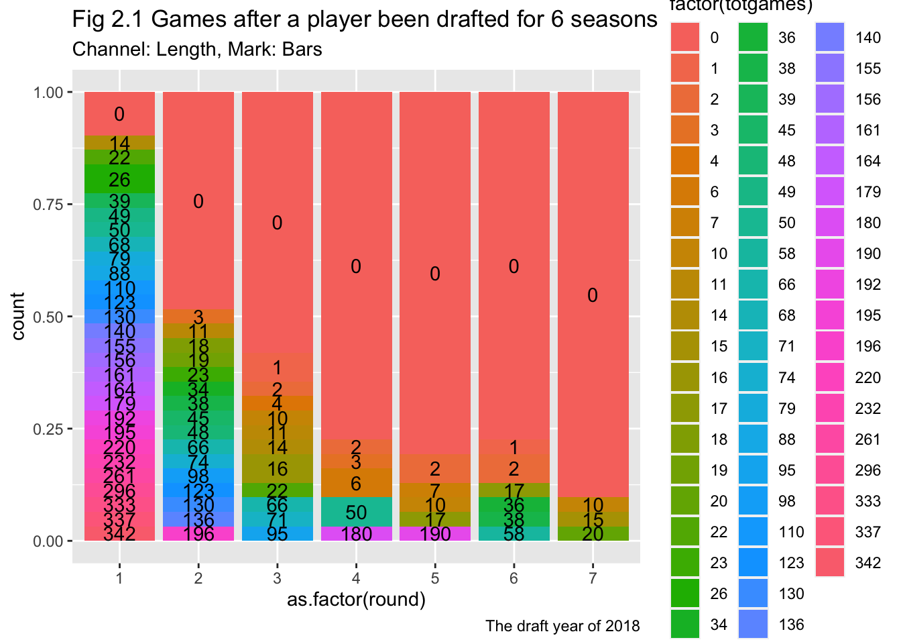
This approach might yield a better match with the scatterplot idiom. What if we ignore draft round, and use the player’s overall draft position instead?
ggplot(drafttot2018, aes(x=overall, y=totgames))+
geom_point()
For this figure, address the following:
# library(reshape2)
# test_df <- melt(data.frame(drafttot2018$overall, drafttot2018$totgames)) %>%
# mutate(val_trimmed = case_when(
# drafttot2018$overall > 32 * 2 ~ 32 * 2,
# drafttot2018$overall < 32 ~ 32,
# T ~ drafttot2018$overall
# ))
cols <- c("#1170AA", "#55AD89", "#EF6F6A")
ggplot(subset(drafttot2018, round <= 3), aes(x=overall, y=totgames, color = factor(round)))+
geom_point()+
scale_color_manual(values = cols) +
scale_x_continuous(name ="Position of the players")+
labs(title = "Fig 3.1 Total games for the players from first three round",
subtitle = "Channel: Position, Mark: Point",
caption = "The draft year of 2018")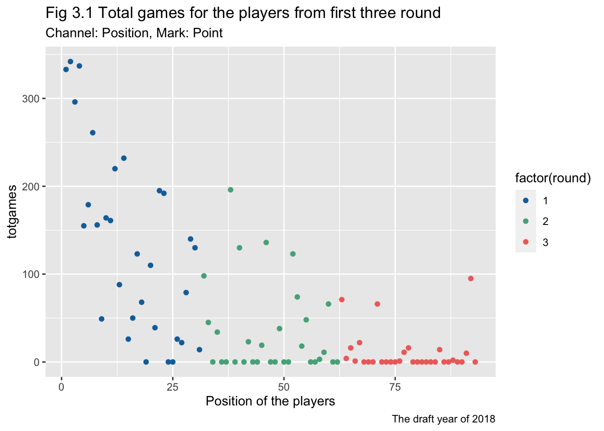
# options(dplyr.summarise.inform = FALSE)
# draft_postdraft_l6<-NHLDraft%>%
# filter(postdraft<6)
#
# drafttot_postdraft_l6<- draft_postdraft_l6%>%
# group_by(draftyear, playerId, round, overall, position, name)%>%
# summarise(totgames=sum(NHLgames))
#
# cols <- c("#1170AA", "#55AD89", "#EF6F6A")
# ggplot(subset(drafttot_postdraft_l6, round <= 3), aes(x=overall, y=totgames, shape = factor(round), color = factor(draftyear)))+
# geom_point()+
# #scale_color_manual(values = cols) +
# scale_x_continuous(name ="Position of the players")+
# labs(title = "Fig 3.2 Games for first three round players (post draft < 6)",
# subtitle = "Channel: Position, Mark: Point",
# caption = "The draft years from 2000 to 2022")# https://r-graph-gallery.com/histogram_several_group.html
# http://www.sthda.com/english/wiki/wiki.php?id_contents=7904
library(viridis)Loading required package: viridisLite#library(forcats)
options(dplyr.summarise.inform = FALSE)
draft_postdraft_l6<-NHLDraft%>%
filter(postdraft<6)
drafttot_postdraft_l6<- draft_postdraft_l6%>%
group_by(draftyear, playerId, round, overall, position, name)%>%
summarise(totgames=sum(NHLgames))
ggplot(subset(drafttot_postdraft_l6, round <= 3),
aes(x=overall, y=totgames, color=factor(round))) +
geom_point() +
scale_fill_viridis(discrete=TRUE) +
scale_color_viridis(discrete=TRUE) +
xlab("") +
ylab("totgames") +
#facet_grid( ~ draftyear)
facet_wrap(~draftyear)+
scale_x_continuous(name ="Position of the players")+
labs(title = "Fig 3.2 Games for first three round players (post draft < 6)",
subtitle = "Channel: Position, Mark: Point",
caption = "The draft years from 2000 to 2022")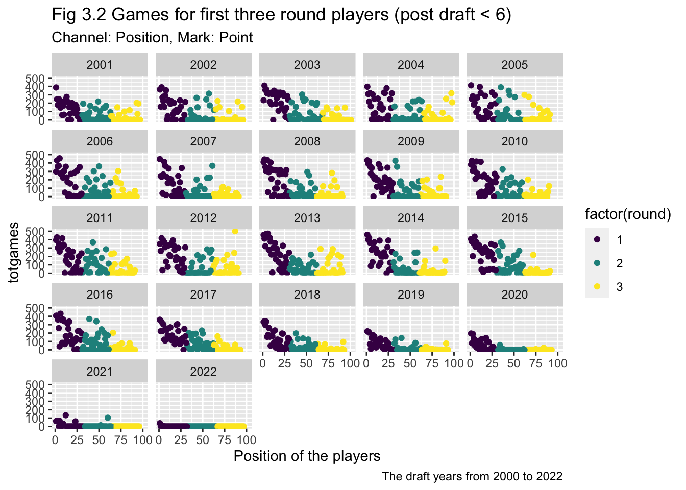
# p <- data %>%
# #mutate(text = fct_reorder(draftyear, totgames)) %>%
# ggplot( aes(x=overall, color=factor(draftyear), fill=factor(draftyear))) +
# geom_histogram(alpha=0.6, binwidth = 5) +
# scale_fill_viridis(discrete=TRUE) +
# scale_color_viridis(discrete=TRUE) +
# #theme_ipsum() +
# # theme(
# # legend.position="none",
# # panel.spacing = unit(0.1, "lines"),
# # strip.text.x = element_text(size = 8)
# # ) +
# xlab("") +
# ylab("totgames") +
# facet_wrap(~draftyear)
# pWe seem to be running into an issue in terms of overplotting. Scatterplots are great, but they work best for two quantitative attributes, and we have a situation with one or two keys and one quantitative attribute. The thing is, scatterplots can be very useful when part of our workflow involves modeling the data in some way. We’ll cover this kind of thing in future assignments, but just a bit of foreshadowing here:
ggplot(drafttot2018, aes(x=round, y=totgames))+
geom_point()+
geom_smooth()`geom_smooth()` using method = 'loess' and formula 'y ~ x'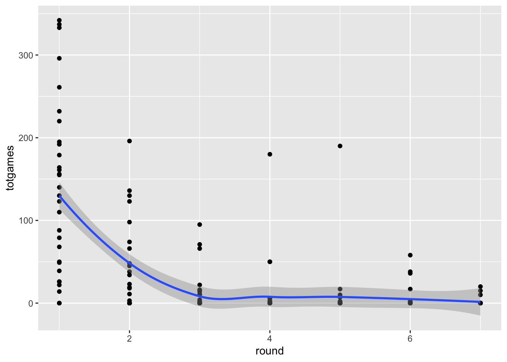
Adding the smoothed line doesn’t eliminate the overplotting problem, but it does indicate that it exists. We’ll cover other potential solutions (including Cody’s violin plots!) to this issue later in the course, when we get to the notions of faceting and data reduction.
cols <- c("#1170AA", "#55AD89", "#EF6F6A")
ggplot(subset(drafttot2018, round <= 3), aes(x=overall, y=totgames, color = factor(round)))+
geom_point()+
geom_smooth()+
scale_color_manual(values = cols) +
scale_x_continuous(name ="Position of the players")+
labs(title = "Fig 3.1 Total games for the players from first three round",
subtitle = "Channel: Position, Mark: Point, Line",
caption = "The draft year of 2018")`geom_smooth()` using method = 'loess' and formula 'y ~ x'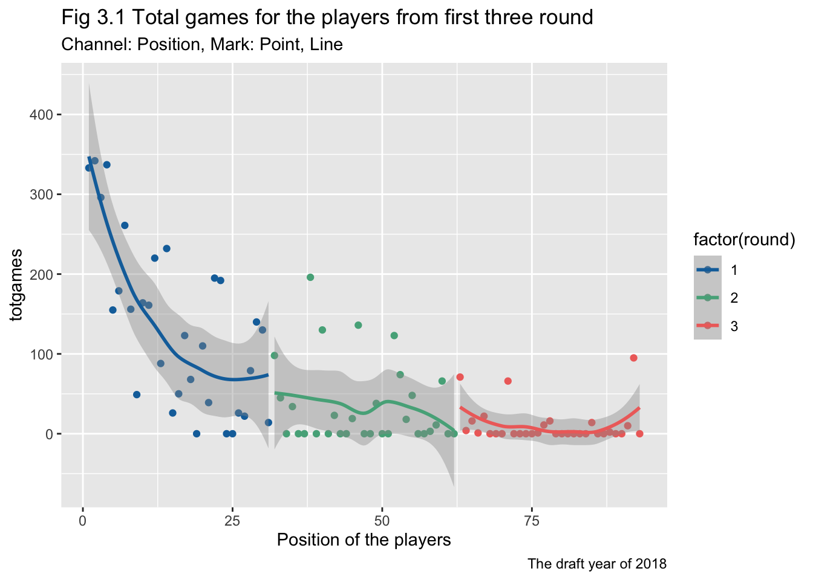
One of the best ways to deal with overplotting is to use our keys to SEPARATE and ORDER our data. Let’s do that now. I’ll stick with the summarized data for the 2018 draft year for now.
ggplot(drafttot2018, aes(x = name, y=totgames))+
geom_col()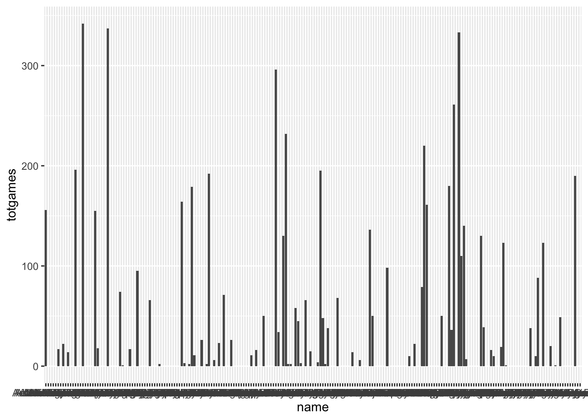
Epic. We now have a bar (column, really) chart with the key being player name, and the attribute being the total number of games played. We’ve SEPARATED the data using the spatial x-axis position channel, and aligned to that axis as well. But this visualization clearly sucks. You need to make it better by:
drafttot2018_sorted <- drafttot2018[order(drafttot2018$round), ]
color_palette <- viridis(length(unique(drafttot2018_sorted$round)))
plot <- plot_ly(drafttot2018_sorted, x = ~name, y = ~totgames, type = "bar", color = ~as.factor(round),
colors = color_palette)
plot <- plot %>%
layout(xaxis = list(type = "category", automargin = TRUE),
margin = list(l = 100),
title = list(text = paste0('Fig 4.1 Total games for the players',
'<br>',
'<sup>',
'Channel: Position, Mark: Point, Line',
'</sup>')),
annotations =
list(x = 1, y = -0.1, text = "The draft year of 2018",
showarrow = F, xref='paper', yref='paper',
xanchor='right', yanchor='auto', xshift=0, yshift=-100,
font=list(size=15, color="black")))%>%
config(scrollZoom = TRUE)%>%
layout(xaxis = list(categoryorder = "array", categoryarray = drafttot2018_sorted$name))
ggplotly(plot)I tried to suppress the warning messages here by suppressWarnings() but failed.
Stacked bar charts use two keys and one value. Can we leverage this idiom? Perhaps if we used both round and postdraft as our keys and NHLgames as our value…
The idea here is that we might be able to get a sense of the temporal pattern of NHL games after a player is drafted. Do first round picks join the NHL earlier? Do they stay in the NHL longer? That kind of thing.
ggplot(draft2018, aes(x = postdraft, y=NHLgames, fill=as.factor(round)))+
geom_col(position = "stack")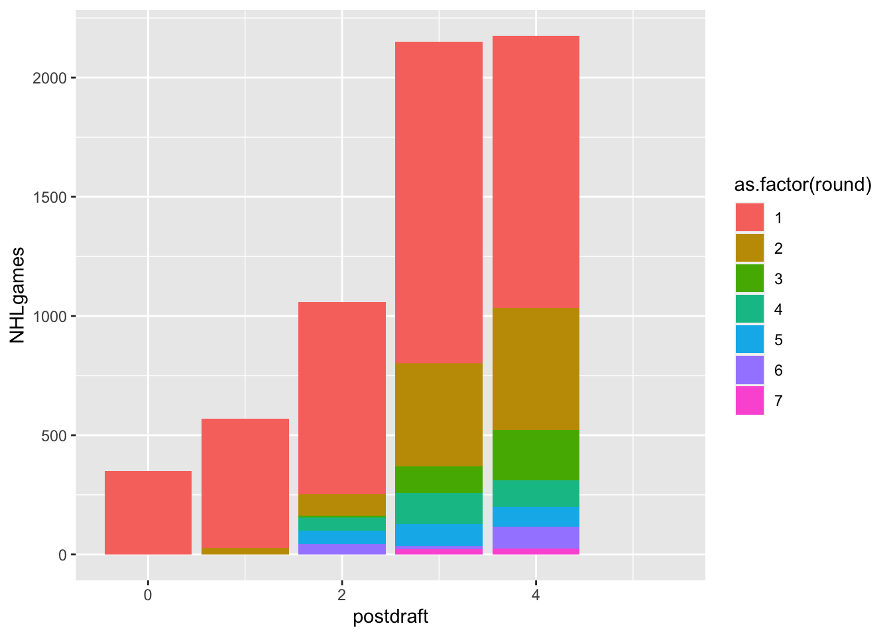
This seems like it has some potential, but it definitely needs some work (by you):
ggplot(draft2018, aes(x = as.factor(postdraft), y=NHLgames, fill=factor(round, levels = rev(unique(round)))))+
geom_col(position = "stack")+
scale_fill_viridis(discrete = TRUE, direction = -1)+
labs(title = "Fig 5.1 NHLgames for the players according to postdraft",
subtitle = "Channel: Length, Color, Mark: Line",
caption = "The draft year of 2018")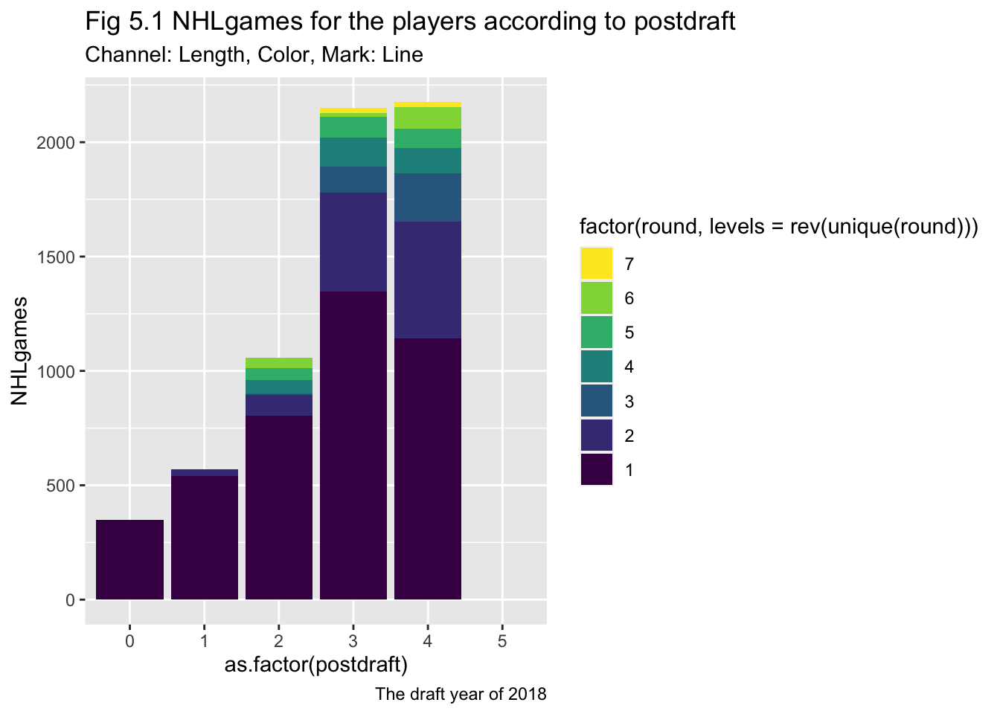
I don’t quite understand the question: > Do we really only want data from the 2018 draft class?
Do you mean we should plot other stacked charts with different x-axis?
ggplot(draft2018, aes(x = as.factor(pickinRound), y=NHLgames, fill=factor(round, levels = rev(unique(round)))))+
geom_col(position = "stack")+
scale_fill_viridis(discrete = TRUE, direction = -1)+
labs(title = "Fig 5.2 NHLgames for the players according to pickinRound",
subtitle = "Channel: Length, Color, Mark: Line",
caption = "The draft year of 2018")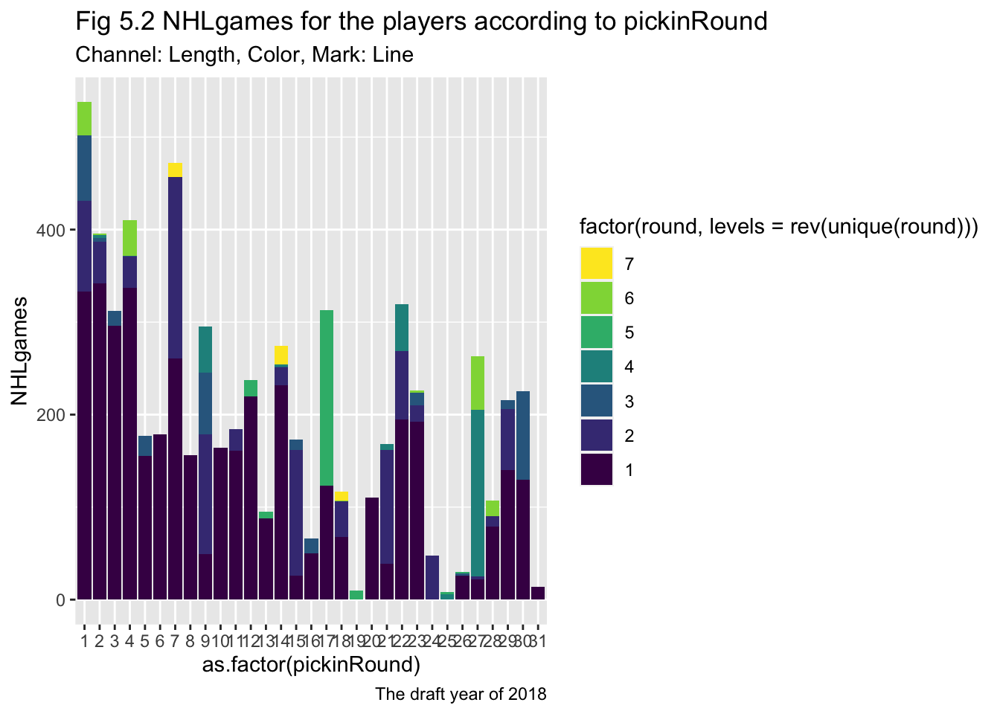
We all know that Pie Charts are rarely a good choice, but let’s look at how to make one here. I’ll eliminate all the players drafted in 2018 who never played an NHL game, leaving us 80 players drafted in that year who made “THE SHOW”. Let’s look at how those 80 players were drafted:
playedNHL2018 <- drafttot2018%>%
filter(totgames>0)
ggplot(playedNHL2018, aes(x = "", fill = factor(round))) +
geom_bar(width = 1) +
coord_polar(theta = "y")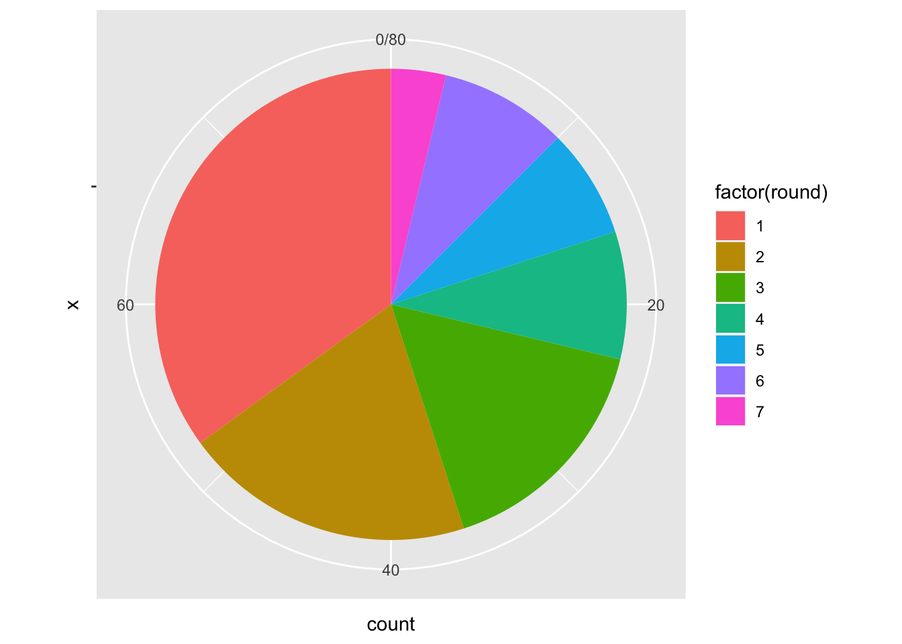
Obviously this isn’t great, but can you state why? Write a little critique of this visualizaiton that:
This pie chart presented all the players with positive values in 2018 NHL games, but neglected the number of the games, which weaken the values of frequent game players within each round.
The pie chart without a proper legend will result in a difficulty to reader to quickly recognize the difference between similar valued pies.
Now let’s change this to account for the various years post draft:
seasonplayedNHL2018 <- draft2018%>%
filter(NHLgames>0)
ggplot(seasonplayedNHL2018, aes(x = "", fill = factor(round))) +
geom_bar(width = 1) +
coord_polar(theta = "y")+
facet_wrap(~postdraft)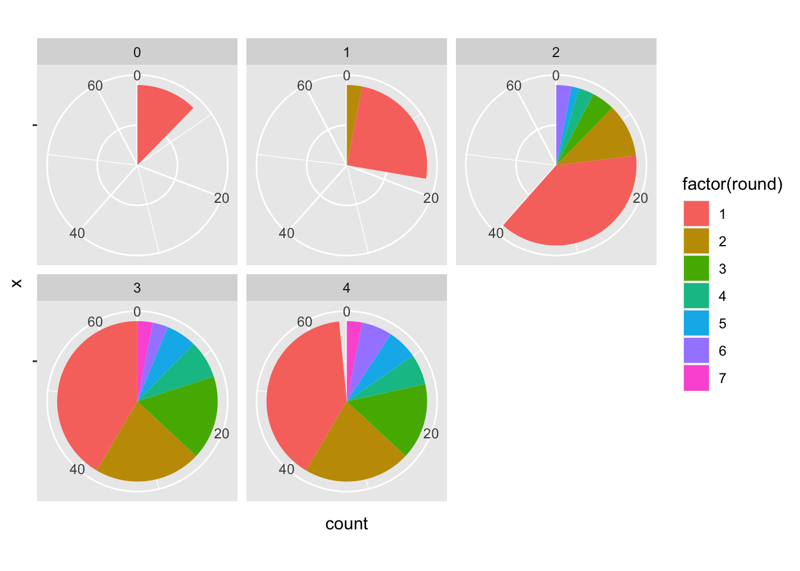
Seems like there is something to work with here, but let’s compare this to a normalized bar chart:
ggplot(draft2018, aes(x = postdraft, y=NHLgames, fill=as.factor(round)))+
geom_col(position = "fill")Warning: Removed 218 rows containing missing values (geom_col).
Can you work with this to make it a useful visualization for your friend, Cassandra Canuck?
ggplot(draft2018, aes(x = as.factor(postdraft), y = NHLgames, fill = as.factor(round))) +
geom_bar(stat = "identity", position = "stack")+
labs(title = "Fig 6.1 NHLgames for postdraft",
subtitle = "Channel: Length, Color; Mark: Line",
caption = "The draft year of 2018")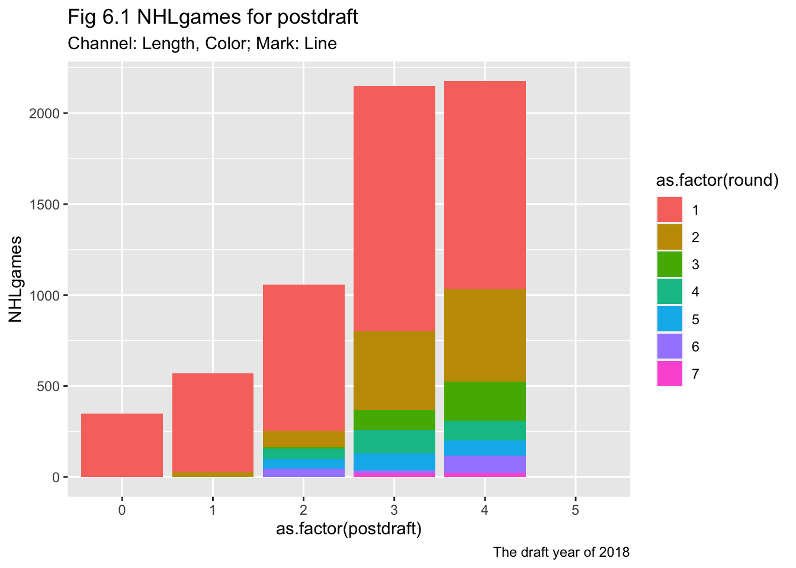
Could this be useful?
round1<-NHLDraft%>%
filter(round==1)
ggplot(round1, aes(y = reorder(name, overall), x = postdraft, fill = NHLgames)) +
geom_tile() +
scale_fill_gradient(low = "blue", high = "red")
NHLDraft_summary <- NHLDraft%>%
filter(round<4)%>%
group_by(round, postdraft) %>%
summarise(total_NHLgames = sum(NHLgames))
heatmap <- ggplot(NHLDraft_summary, aes(y = round, x = postdraft, fill = total_NHLgames)) +
geom_tile() +
scale_fill_gradient(low = "blue", high = "red")+
labs(title = "Fig 7.1 NHLgames heat map for postdraft",
subtitle = "Channel: Position; Mark: Color",
caption = "The draft year of 2000-2022")
heatmap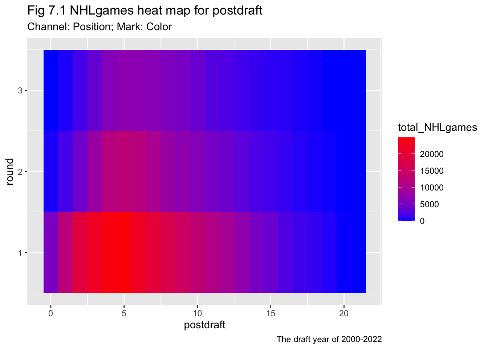
Some visualizations considered the position of the players, e.g. Fig 3.1, 3.2. Therefore the scatters will change subject to the change in position data. But some other visualization grouped the position values in a round, therefore the change won’t reflected in the results of visualization.
The NHL games and totgames share the same tendency that the players with prior round tend to have more games. NHL games as a more competitive game can stand for a better performance of a player, but this value can be very limited in the early years for a young play. In that situation, the totgames would be a better choice to delineate the value of early-career players.
Based on your visualizations, what would you advise regarding this trade proposal? Why?
Trading one first-round player to two second-round players plus one third-round player seems plausible.
The first-round players have the dominant number of games and NHL games in history. The second-round players cannot achieve half the number of games compared to the first. Nor to mention the further rounds. But the total number of games of 2 second-round players plus a third-round player seems plausible compared with one first-round player.
I wonder what factors determine the profit of hockey games. Concerning whether the cost of training one good player is economical compared with three other players.